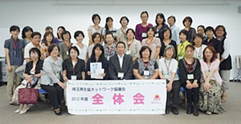

- 【日 時】
- 6月29日(月)10:30～14:00
- 【場 所】
- 浦和コミュニティセンター第15集会室
- 【出席者】
- 61人
全体会に先立って、生協のココを知ってもらう～「伝えたいこと」を「読みたいこと」へ～と題して、さいたま市市民活動サポートセンターセンター長の東一邦さんによるスキルアップ応援講座を行ないました。
■全体会(第1回協議会)

- 埼玉県生協連岩岡副会長理事より、消費者や消費者団体の権利や役割について、消費者庁の発足や消費者関連法の制定と改正の状況について、県内1,995人の有識者アンケート(県生協連が実施)について、お話をいただきました。
- 滝澤会長より、設置要綱変更（2011.1.20）により会長職が2年1期になり今年は引き続きです。お願いしますと挨拶がありました。
- 協議会メンバーの自己紹介(行きたい所、会いたい人を発表)を行ないました。
- 事務局より2011年度の活動のまとめと報告を行いました。
- 滝澤会長より、総合テーマ｢広く地域の中でつながりあうために｣は、引き続きテーマとし学習や交流活動をしていくことが提案され確認されました。事務局より2012年の予算について説明を行いました。
- 係の説明を行い、委員を確認しました。
|